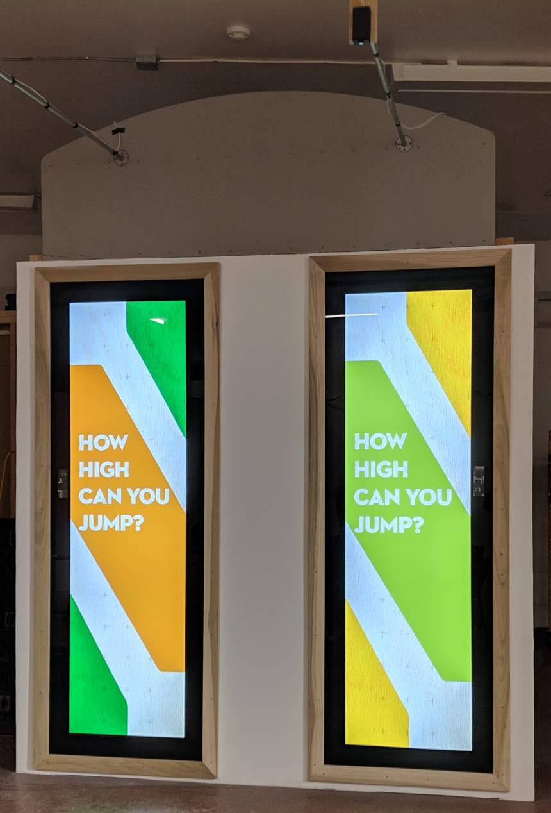

Jump In

Jump In is an exciting exhibit that was designed and build for Caytons Childrens Museum in Santa Monica California. This exhibit allows visitors to see how tall they are as well as how high they can jump. As a visitor approaches the exhibit it will sense their presense and height and display the visitors height. After a few seconds for the user to get oriented the exhibit will prompt the visitor to jump, and then will capture the height of that jump as well as a slow motion video of the visitor jumping.
How it works
This exhibit is built around two 86 inch stretch monitors that are inset into a wall. All the interactions of this exhibit are based on a Ultrasonic Distance sensor that is hung above a set of printed feet. Once a person is detected the exhibit will activate and continue until the sequence finishes, or the person is no longer under the sensor.
One of the largest challenges was selecting the correct ultrasonic sensor that would accurately sense both adults and young children, as well as being responsive enough to accurately measure the peak of a jump. This involved a few different types and brands of sensor, and resulted in a MaxBotix Ultrasonic Sensor.